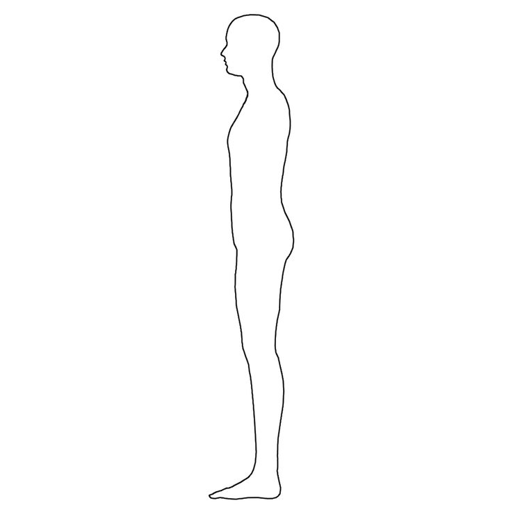
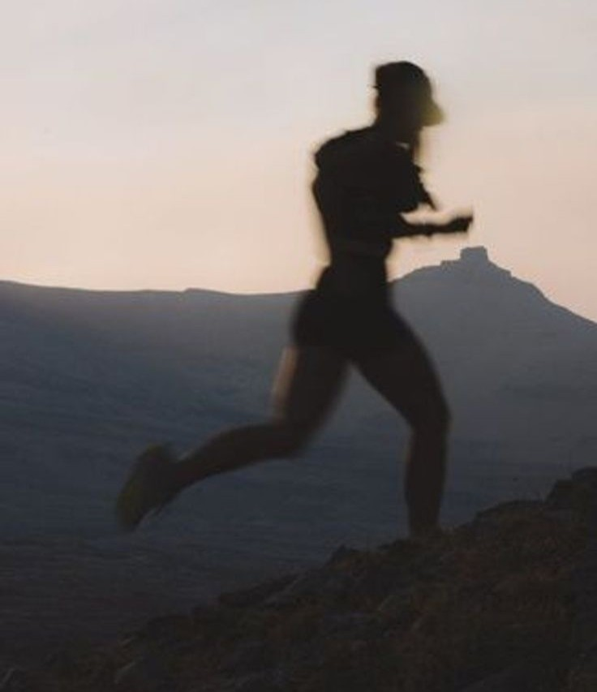

Facial Adiposity
Facial adiposity, or facial fat, influences facial contours, symmetry, and overall health indicators, hence impacting facial aesthetics. It is said that one does not see their underlying facial structure until he or she is sufficiently lean and fit. In other words, an individual's beauty potential may well be hidden behind a layer of fat.

Facial fat and body fat percentage make a noticeable difference in face shape, and can completely change how a person looks.
Due to enhanced contour primarily around the jaw and cheekbones, lean faces have a more 3-dimensional structure and depth, which is associated with facial attractiveness.
Leanness & Aesthetics
Leanness is often associated with physical health and fitness. This is not only reflected in the body but also in the face.

Excess body fat, particularly in the face, can signal poor health or metabolic issues, whereas a lean face and physique is perceived as a marker of vitality, well-being
and reproductive success.

Science has identified the correlation between beauty and Body-Mass Index (BMI). The most attractive faces had a normal, healthy BMI - they were neither underweight or overweight. However, body fat percentages may have a stronger link to facial attractiveness.
Percentage body fat shows a curvilinear relationship with attractiveness, being too thin or fat reduces facial attractiveness substantially, especially in women.
The body fat range where one's facial attractiveness is maximised coincides with the normal, healthy range for each sex.
This healthy range is 8-17% for men and 16-25% for women.
However, leanness at the lower end of these ranges is most strongly associated with peak facial attractiveness.
Trends in modern media, modelling industry and entertainment industry highlight beauty standards and preferences
that favour slimmer and more defined faces revealed at lower body fat levels.
Lean faces highlight features like defined cheekbones and jawlines that makes the face more angular, especially from the side profile. Not only are they cues of strong bone structure and hormonal health, but sharper features are also more striking and memorable.
Proportions
Facial fat not only determines the overall face shape, but also the facial proportions.

The width of the face changes when one loses fat, revealing a more robust face shape, especially when one has a well developed skull. The relative height and width of the face changes and tends to become more aesthetically pleasing at low body fat levels.

Within the face, it can make the eyes larger and more proportionately spaced relative to the face when one's face becomes slimmer, creating more prominent eyes. The loss of fat may result in a slimmer, more delicate nose.

Most people won't venture to low enough body fat percentages to see significant changes in facial definition. While slight changes in weight is noticeable in the face, a lot more changes in body fat to change one's facial attractiveness, given that the face is one of the last areas where fat is lost.
Cultural Factors
The ideal leanness for facial aesthetics is influenced by a combination of biological/evolutionary factors and cultural preferences.

Low to moderate body fat levels reflected by the face signal hormonal health, which is evolutionarily preferred.
Either of the extremes are unhealthy, as excessively low body fat for example can signal malnourishment or lack of food.
Culturally, modern media has propagated the idea that a lean, defined face is attractive, through advertisments and films, making such a standard widely acceptable.

Nevertheless, exceptions exist for some smaller cultural groups, such as rural Jamaicans and Mauritanians favoring rounder and plumper partners. Throughout history, these cultural ideals have also been reflected, as seen from preferences for fuller figures in both men and women were often celebrated and considered the beauty standard in many parts of Europe. Thus, there was less emphasis on a defined face for aesthetics.
Leaning out
Most glow up transformations on social media such as TikTok and Youtube are attained through significant weight loss as facial fat is critical for facial attractiveness. Quick practices such as debloating the face to achieve a slimmer look are fairly common.

However, getting lean is not the be-all and end-all when it comes to glowing up.
Your underlying facial structure is the foundation for how your face looks.
Some people with more robust facial bones may appear leaner at a higher body fat percentage, yet some faces may seem puffier
despite low body fat levels due to a high carb diet and inflammation.

For many, losing weight is one of the most worthwhile pursuits to look more attractive in both their face and body. You will not be able to see the facial structure you have until you reach a sufficiently low body fat percentage, but development of the underlying facial structure is equally important.

Proper orthodontics, jaw and cheekbone development, skin health are all essential components for facial beauty, hence the other beauty concepts discussed matter. Glowing up requires a multifaceted and comprehensive approach, as well as sacrifices and determination to realising an individual's potential.
Learn More under the How to Glow Up section